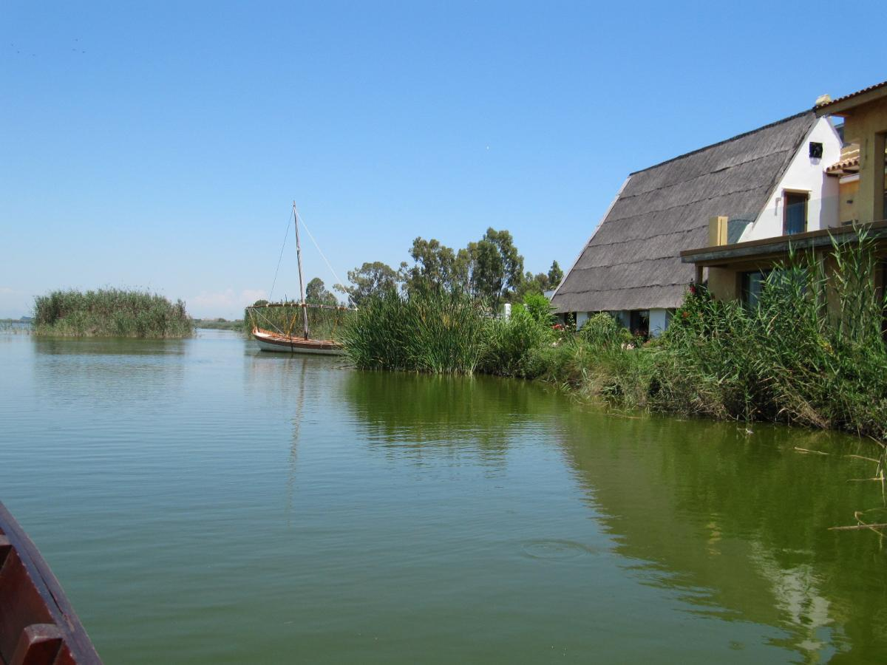
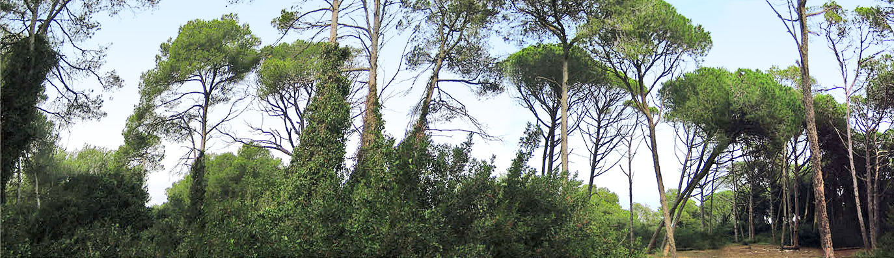
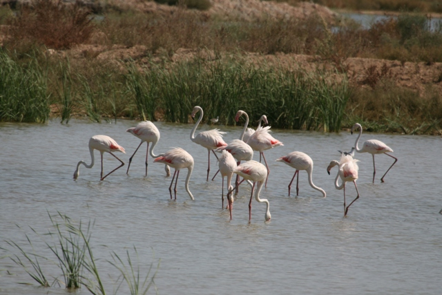
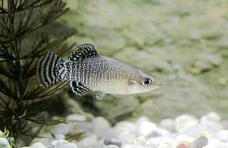
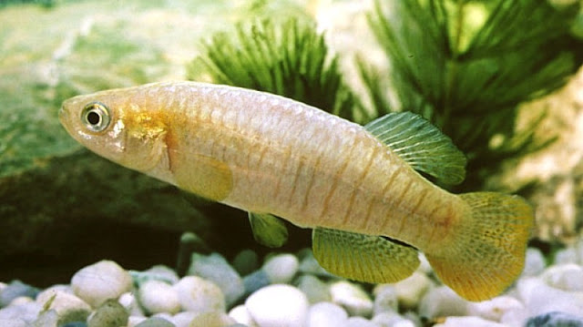
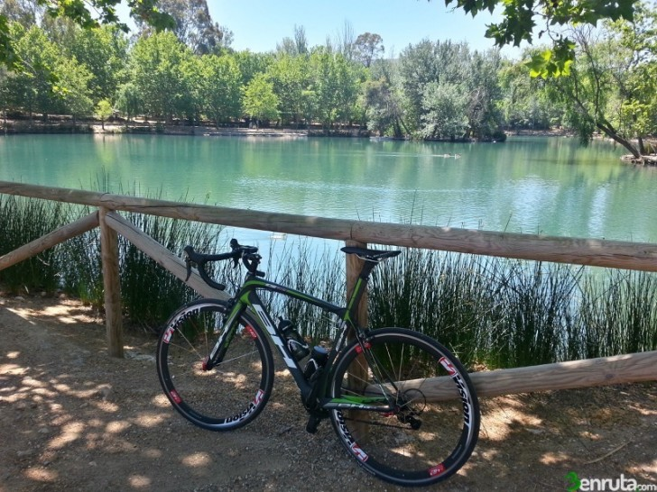
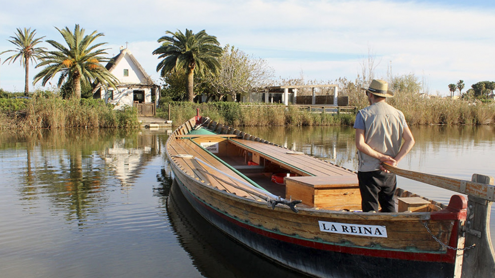
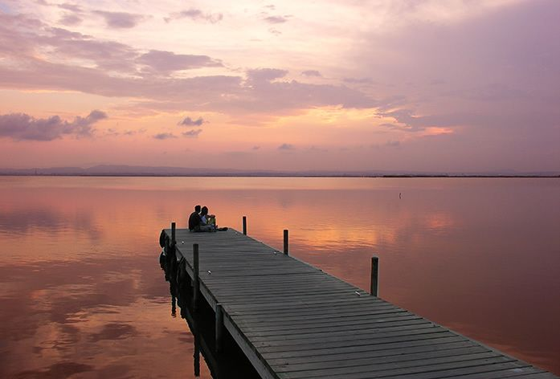

Albufera Natural Park
It is a Spanish protected natural area located in the province of Valencia, Valencian Community.
The Romans called it Nacarum Stagnum and in some Arabic poems it is called Mirror of the Sun.
It has an area of 21,120 hectares

It was declared a natural park by the Generalitat Valenciana on July 8, 1986, it is located about 10 km south
of
the city of Valencia.
It includes the Albufera, its humid environment and the coastline adjacent to both.
In 1902, the Valencian writer Vicente Blasco Ibáñez wrote the novel Cañas y barro, set in Albufera at the
beginning of the 20th century.

The Valencia lagoon is a coastal lagoon with an average depth of 1 meters.
It is separated from the sea by a narrow sandy shoreline with dunes stabilized by a pine forest.

Albuferas´s fauna
The Albufera Natural Park is a transit area for many species of migratory birds, such as flamingos.

El parque natural de la albufera tiene un gran valor ecológico.
En sus aguas podemos encontrar especies actualmente protegidas por peligro de extinción como el fartet o el
samarugo.


What can you do in the Albufera Natural Park?
You can walk around and enjoy the scenery. The park has five marked routes to be able to travel both on foot and
by bicycle.

If you prefer, you can take a 45-minute ride, hiring the boat ride service. This service has an approximate price
of 5 euros.

It is highly recommended that after visiting the park, you approach the viewpoint at sunset time. It is a
beautiful image.

Lastly, there are restaurants in the surroundings of the park that offer wonderful views.
If you have the opportunity, enjoy the most typical food in the region, the Valencian paella.
How to get to the Albufera natural park?
- The main access road to the park is the El Saler highway (V-15).
- Another access road to the north of the natural park is the CV-401.
- It can also be reached through the N-332 road.